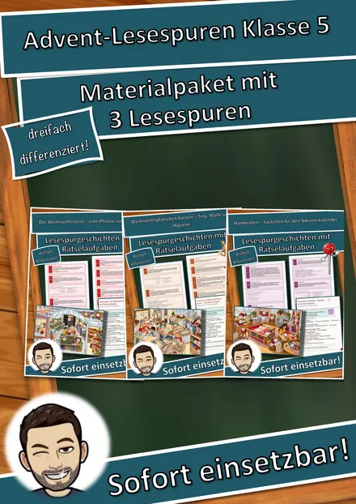
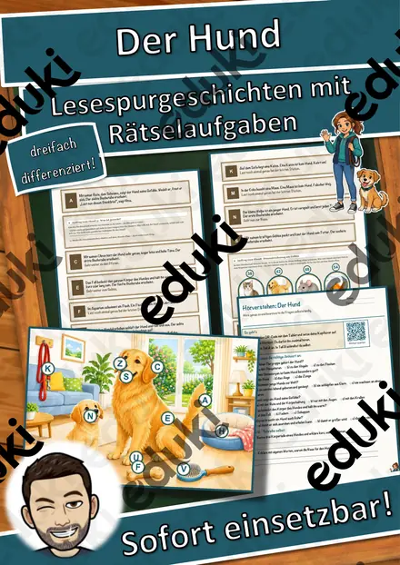
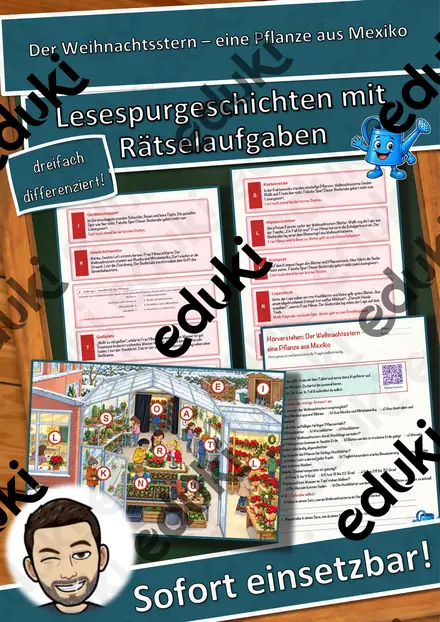
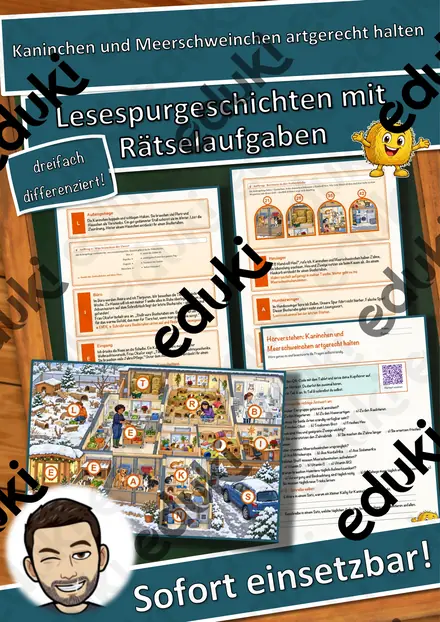
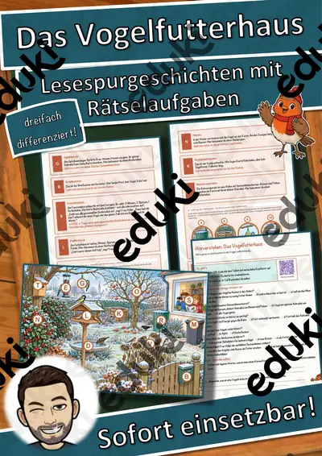
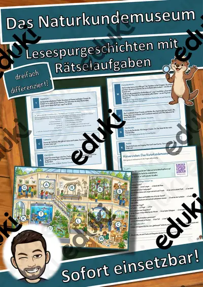
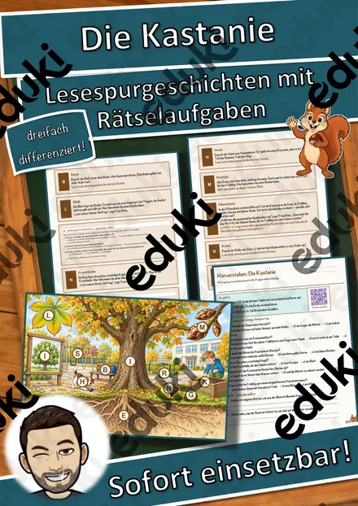
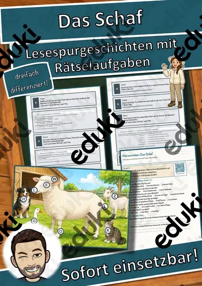

Der Fisch – Lesespurgeschichte mit Rätselaufgaben (Klasse 5)
Begib dich mit deiner Klasse auf eine spannende Lesespur rund um den Fisch! Die Kinder erkunden mit der Naturforscherin Frida die wichtigsten Körperteile eines Fischs – vom Maul über das Auge und die Kiemen bis zu Rücken-, Brust-, Bauch- und Schwanzflosse. Ganz nebenbei lernen sie, wie der Fisch unter Wasser atmet und sich fortbewegt und was ihn von anderen Wassertieren unterscheidet. Am Ende jedes Abschnitts verrät ein Hinweis den nächsten Ort (einen Körperteil) auf dem Fisch-Plan – nur wer richtig liest und mitdenkt, findet den Weg und sammelt alle geheimen Buchstaben zum Lösungswort.
Diese Lesespurgeschichte verbindet motivierendes, sinnentnehmendes Lesen mit echtem Sachwissen über den Fisch und schult zugleich das genaue Arbeiten. Das Material ist SOFORT EINSETZBAR und in DREI DIFFERENZIERUNGSSTUFEN (leicht ★ / mittel ★★ / schwer ★★★) angelegt, sodass alle Kinder einer Klasse am selben Thema arbeiten können.WICHTIG: Das komplette Material ist sowohl in FARBE als auch in SCHWARZ-WEISS enthalten – ideal zum Sparen von Druckkosten.DAS IST ENTHALTEN
- Lesespurgeschichte in 3 Niveaus (leicht, mittel, schwer)
- farbiger Fisch-Plan als Suchkarte
- Hörverstehen mit QR-Code zur MP3 (Kinder hören selbstständig mit Kopfhörern)
- vier Aufträge auf dem Weg: ein Verbinde-Rätsel, ein Fisch-Quiz, eine Rechenaufgabe und ein Steckbrief
- Rätselseite (Wörter-Suchsel + Wissensfragen)
- Ausmalbild zum Thema
- ausführliches Lösungsblatt für die Lehrkraft
- alles zusätzlich als komplette Schwarz-Weiß-VarianteSO FUNKTIONIERT DIE LESESPURDie Kinder lesen ab START, entnehmen dem Text einen Hinweis auf einen Ort (einen Körperteil), suchen ihn auf dem Plan und lesen bei dieser Station weiter. An jeder richtigen Station gibt es einen Sammelbuchstaben. Eingebaute Sackgassen (Krebs, Muschel, Frosch, Libelle) dienen der Selbstkontrolle und machen deutlich, dass diese Tiere zwar auch am Wasser leben, aber keine Körperteile des Fischs sind. Am Ende werden die gesammelten Buchstaben umgestellt und ergeben ein geheimes Lösungswort. (Die Lösungen sind selbstverständlich nur im Lösungsblatt für die Lehrkraft enthalten.)INHALTLICHER SCHWERPUNKTKörperbau und Lebensweise des Fischs: das Maul zur Nahrungsaufnahme, das seitliche Auge, die Kiemen zum Atmen unter Wasser, die Rückenflosse für das Gleichgewicht, Brust- und Bauchflossen zum Steuern und die kräftige Schwanzflosse für den Vortrieb. Dazu die Atmung mit Kiemen und der Unterschied zwischen dem Fisch und anderen Wassertieren wie Krebs, Muschel, Frosch und Libelle. Das Material stellt die Zusammenhänge sachlich und kindgerecht dar.ABGEDECKTER LEHRPLAN (Klasse 5)
- Biologie – Der Fisch: Körperteile und ihre Aufgaben, Bau eines Wirbeltiers, Atmung mit Kiemen, Fortbewegung im Wasser, Merkmale der Wirbeltiergruppe Fische.
- Deutsch – Lesen mit Texten und Medien umgehen: Lesestrategien anwenden, Texten gezielt Informationen entnehmen, sinnentnehmend und selektiv lesen; Selbstkontrolle und Lesemotivation durch die Lesespur; Zuhören: einem Sachhörtext konzentriert folgen und Wesentliches entnehmen (Hörverstehen mit MP3).
- Mathematik – Rechnen im Sachzusammenhang (Zahlen rund um Fische und Gewässer).
- Fächerübergreifend / Kompetenzen: biologisches Grundverständnis, genaues Lesen und Prüfen, Konzentration und Ausdauer, kreatives Gestalten (Ausmalbild).
Geeignet für Freiarbeit, Stationenlernen, Vertretungsstunden, Wochenplan und Homeschooling. Klassenstufe 5 (differenziert einsetzbar auch in angrenzenden Jahrgangsstufen).
Ähnliche Materialien

Materialpaket Advent für die 5. Klasse: 3 Lesespurgeschichten mit Rätselaufgaben (Weihnachtsstern, Plätzchen backen, Handnähen)

Der Hund – unser treues Haustier – Lesespurgeschichte mit Rätselaufgaben (Klasse 5)

Der Weihnachtsstern – eine Pflanze aus Mexiko – Lesespurgeschichte mit Rätselaufgaben (Klasse 5)

Kaninchen und Meerschweinchen artgerecht halten – Lesespurgeschichte mit Rätselaufgaben (Klasse 5)

Das Vogelfutterhaus – Lesespurgeschichte mit Rätselaufgaben (Klasse 5)

Das Naturkundemuseum – Lesespurgeschichte mit Rätselaufgaben (Klasse 5)

Die Kastanie – Lesespurgeschichte mit Rätselaufgaben (Klasse 5)
